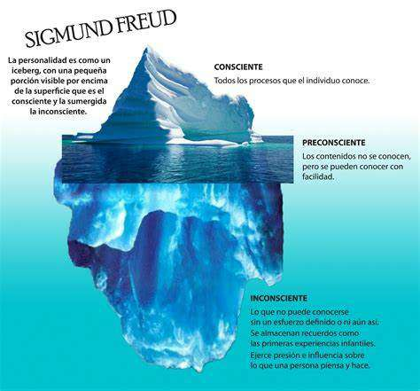

“El inconsciente es el círculo más grande que incluye dentro de sí
el círculo más pequeño del consciente; todo consciente tiene su
paso preliminar en el inconsciente, mientras que el inconsciente
puede detenerse con este paso y todavía reclamar el pleno valor
como actividad psíquica”.
Para ello, utilizó una analogía que a todos nos es sobradamente familiar: la del iceberg.
- En la superficie está la conciencia, ahí donde concurren todos esos pensamientos donde focalizamos nuestra atención, que nos sirven para desenvolvernos y que utilizamos con inmediatez y rápida accesibilidad.
- En el preconsciente se concentra todo aquello que nuestra memoria puede recuperar con facilidad.
- La tercera y más importante región es el inconsciente. Es amplio, vasto, inabarcable a veces y misterioso siempre. Es la parte que no se ve del iceberg y la que ocupa en realidad, la mayor parte de nuestra mente.